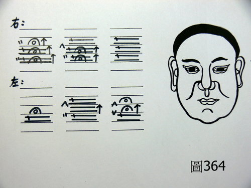

症狀學 5：舌苔水滑
作者：陳建元
定義、說明：
舌苔水滑是指舌苔望診時，病人舌頭上的苔液多而清晰，嚴重者甚至有垂涎欲滴之勢。
造成舌苔水滑之原因：
1. 脾虛生濕：脾虛生濕是造成舌苔水滑的最常見原因。判斷的方法，是按其脾脈沉緩或細遲，問診有腹脹、便軟、食慾不振之表現者即是也。
2. 陽虛寒濕：諸臟的陽虛寒濕，也可以表現出舌苔水滑的情況，看到這種情況時，需注意再看舌質的情況，大抵都是白嫩胖大，又宜和脈象來合參，譬如患者舌苔水滑，按其諸脈尚可，唯心脈沉細無力，則此水滑苔，是由心脈而來的，病機在心，當補心陽不足為治；譬如患者舌苔水滑，按其諸脈尚可，唯肺脈沉細無力，則此水滑苔，是由肺脈而來的，病機在肺，當補肺陽不足為治。
3. 濕熱、酒毒：濕熱蒸熏的時候，會把水氣帶上來，也會看到水滑苔，此時需再看舌質的情況，大抵舌質偏紅，上有一層黏膩苔（或白或黃），黏膩苔的上面，才是一層水滑苔，此即濕熱蒸熏所導致的水滑苔也，又宜合脈來判斷，譬如按其諸脈尚可，唯脾脈沉緩滑數，則當瀉脾胃之濕熱為治；譬如按其諸脈尚可，唯肝脈沉緩滑數，則當瀉肝脈之濕熱為治。酒毒者，與濕熱類似，蓋酒亦助濕熱之品也，而常飲酒之人，舌質又容易帶紫色也。
4. 實熱、虛熱：有虛熱或實熱時，皆容易把水氣帶上來，故一樣可以見到水滑苔，這時的表現，是舌質偏紅，而上面覆蓋一層水滑苔，實熱者，如實脈之類是也 （見第 33.8 條 實脈）；虛熱者，如洪脈之類是也 （見第 33.11 條 洪脈），治療的時候，又須與脈合看，來掌握正確的病位在何處，才能有的放矢。
5. 瘀血：身體有較明顯的瘀血證時，有時候也可以見到舌苔水滑的現象，蓋醫理上有瘀血則水停的現象，估計是瘀血時，水行不順暢而停留，故有時也可見到舌苔水滑的現象。
申明：
多種原因皆可以導致舌苔水滑，不是一般常見的〝脾虛生濕〞一途而已，實證實熱也可以導致舌苔水滑，須注意舌質的顏色和參合脈象來判斷，才不會被誤導。
【附錄：應用說明】
或問：老師您好，想順道跟您問一個臨床上的案例。
70餘歲的男性，因頭暈而就診。學生當時判斷是因為寒凝而導致氣滯水濕不化多處脈象弦而滑，但是愈想愈覺得好像不對的樣子，理論上若是因寒，那麼整體脈象應會偏沉，可是此案脈卻都在2-3-4 層之間，應如何分析才好？非常感謝您！〈圖364〉
資料是：頭暈大於2年，2年前不定時發作，眩暈嘔吐，但2年前大腸癌術後化療，轉為微暈，走路不穩，若路面高低起伏則易暈，久坐站起時易暈，但不眩，耳鳴整的發作，左耳如蟬，右耳哄隆併聽力減退；小便尿柱細 BPH with medication；安眠藥1/2顆；納可，大便可，不渴 舌暗紅不鮮，苔薄白，水滑。
真武湯7 澤瀉1.2 白芍1 Tid×7天
前醫方：真武湯4.5 六味地黃丸5 雞血藤1 川芎0.5 旱蓮草2 Tid×7天
訴：暈稍減

答：
雖然70歲了，但耳鳴頭暈這些以脈證來看，顯示的是實證，並不能老人就當成虛證來看待。應該要先清上中下焦的〝氣火痰瘀〞才對（脈能橫跨2-3-4 層之間這麼大的幅度 ，基本上就是不折不扣的實火了），這不是寒凝啦。
或再問：不過當時因為我也在猶豫這到底是不是熱，但是問病人，他也說不出什麼特別的熱象來，看到苔又是水滑，所以就先認為是寒了。
答：
熱證實證看面紅不紅也很不準確（情況很多），如果是脈象實時，仔細聽他說話的聲音，如果是像一般人一樣，並沒有說話聲音細弱無力，或是說話句子的幾個尾字有氣無力而下落的話，那這個脈象就是真的。
苔水滑的情況是這樣子，如果水滑時，要再看舌的質，如果是嫩白，則是虛寒生濕之類；如果是舌的質是一般或偏紅而老，而他的脈是實脈之類的，則這個水滑，其實是因為有熱，熱氣蒸騰，故把水濕帶到舌面上來的；如果是脈偏於第四層的緩滑，則舌面上的水濕，其實是濕熱為患的緣故。
【引用請先來信告知徵求同意，若有涉及販售營利等商業行為，版權所有拷貝盜用必究。】
【藥王脈學講壇】http://blog.xuite.net/drjychen/twblog